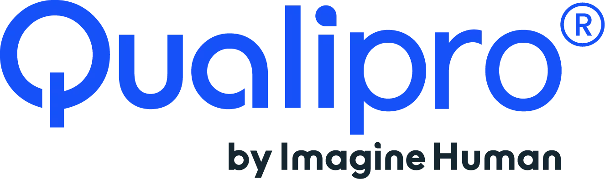

Réf. GRC-01 · Gouvernance · Risques · Conformité
Alaaeddine
Errachid
Consultant Junior GRC / QHSE - Gestion des Risques, Conformité, Audit Interne, ISO 9001 & ISO/IEC 27001.
Jeune diplômé d'un Mastère Professionnel en Management QHSE (Mention Très Bien), j'accompagne les organisations dans leurs démarches de gouvernance, de conformité et de maîtrise des risques - avec une approche méthodique et fondée sur les référentiels ISO.
- Diplôme
- Mastère Pro QHSE - Très Bien
- Référentiels
- ISO 9001 · 27001 · 27002
- Réglementaire
- RGPD · NIS2 · DORA
Photo à venir
Alaaeddine Errachid
Consultant Junior GRC / QHSE
 PFE · 2026
PFE · 2026
Diagnostic du Système de Management Intégré
ISO 9001 · ISO/IEC 27001

QUALIPRO';">Stage réalisé
chez Qualipro
ISO/IEC 27001